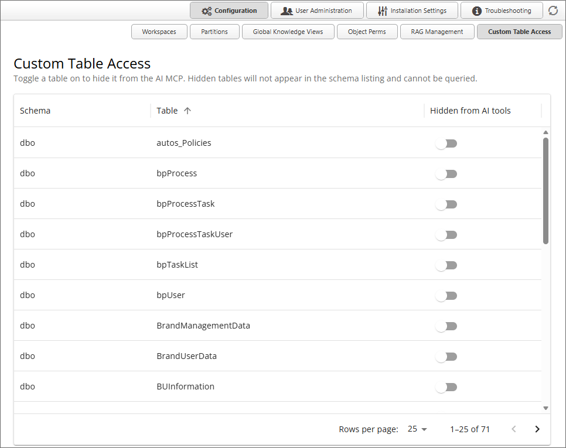

For Process Director v6.1 200, a Custom Table Access page has been added to the Configuration section of the IT Admin area. This page lists all of the custom tables that have been created in the Internal User Database, such as tables created via an Excel file import, etc.

This page enables you to exclude any custom tables you wish from being accessed by an AI agent in the product. To exclude a table from any AI access, simply turn on the switch labeled, Hidden from AI tools, for the table(s) you wish to exclude. Once turned on for a table, no AI agent will be able to access the table, or any information contained in it.
By default, exclusion is turned off for all custom tables.